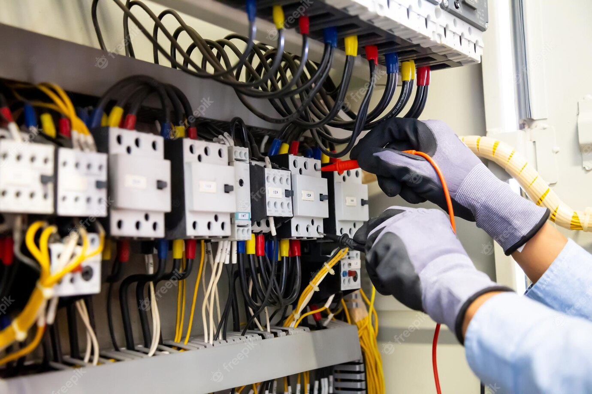

Diagnóstico de averías en instalaciones industriales y sistemas automáticos
3. Tipología de averías en sistemas cableados
Hoy en día cada vez se emplean menos máquinas o procesos que utilizan tecnología de automatización cableada. Sin embargo, existen dos casos en los que todavía se encuentran este tipo de sistemas: máquinas o procesos antiguos y máquinas o procesos muy simples.
En el caso de máquinas o procesos antiguos, el principal desafío para los técnicos es la falta de documentación, como esquemas eléctricos o manuales de puesta en marcha, instalación o mantenimiento. Algunos sistemas muy simples pueden no tener ninguna instrucción escrita sobre cómo abordar averías.
3.1. Elementos y sistemas fundamentales en las instalaciones eléctricas
Los componentes más comunes en los sistemas cableados son relés electromagnéticos, temporizadores, contactores y elementos de protección como fusibles, relés térmicos, interruptores magnéticos y diferenciales. Las averías en este tipo de sistemas suelen estar relacionadas con el desgaste y envejecimiento de estos elementos debido a su uso.
Un buen mantenimiento ayuda a reducir significativamente las averías, y cuando ocurren, suelen ser repetitivas, lo que pone de manifiesto las deficiencias de diseño y los puntos débiles de la instalación.
El coste de reparar este tipo de averías es relativamente bajo, ya que los materiales utilizados no suelen ser costosos. Además, si la mayoría de los componentes son de buena calidad, significará que las averías son poco frecuentes y los componentes pueden funcionar sin problemas durante un ciclo de vida de muchas horas.
El tiempo requerido para solucionar las averías en sistemas cableados depende más de la identificación del problema y de la obtención de los repuestos que del tiempo de reparación en sí.
En la mayoría de los casos, la reparación implica desatornillar los terminales de los elementos dañados, desconectar los cables de conexión y reemplazar los componentes defectuosos, volviendo a atornillar los cables en los terminales.

Comprobación de contactores
Tanto en instalaciones antiguas como en instalaciones sencillas, es recomendable dedicar tiempo a crear manuales detalladas que incluyan pruebas funcionales para abordar posibles averías, además de llevar a cabo un mantenimiento preventivo básico.
El ciclo de vida de un dispositivo hace referencia al tiempo previsto de funcionamiento indicado por el fabricante. En función del tipo de producto, el ciclo de vida puede expresarse en distintas unidades: número de maniobras, horas de funcionamiento...